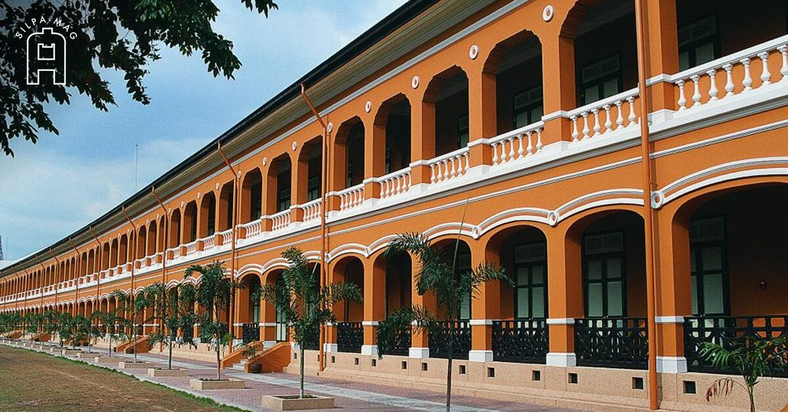

สวนกุหลาบวิทยาลัย🌹
สิ่งที่ประทับใจในโรงเรียนสวนกุหลาบ
อย่างเเรก ผมต้องขอขอบคุณโรงเรียนสวนกุหลาบวิทยาลัยมากที่ทำให้อยู่มาจนถึงทุกวันนี้ครับมีทั้งเพื่อนเเละพี่ใหม่ๆเจออะไรหลายๆอย่างครับ
ประวัติความเป็นมา
โรงเรียนสวนกุหลาบวิทยาลัย (อังกฤษ: Suankularb Wittayalai School; อักษรย่อ: ส.ก. / S.K.) เป็นโรงเรียนชายล้วน ระดับชั้น มัธยมศึกษาขนาดใหญ่พิเศษ สังกัดสำนักงานเขตพื้นที่การศึกษามัธยมศึกษาเขต 1 สำนักงานคณะกรรมการการศึกษาขั้นพื้นฐาน (ชื่อเดิม: กรมสามัญศึกษา) กระทรวงศึกษาธิการ ก่อตั้งโดย พระบาทสมเด็จพระจุลจอมเกล้าเจ้าอยู่หัว ได้รับการสถาปนาขึ้นในวันที่ 8 มีนาคม พ.ศ. 2424 (ขณะนั้นนับวันที่ 1 เมษายน เป็นวันขึ้นปีใหม่ เมื่อนับอย่างสากลถือเป็น พ.ศ. 2425) ถือเป็นโรงเรียนรัฐบาลแห่งแรกของประเทศไทย โรงเรียนตั้งอยู่เลขที่ 88 ถนนตรีเพชร แขวงวังบูรพาภิรมย์ เขตพระนคร กรุงเทพมหานคร บนเนื้อที่ 11 ไร่ 2 งาน 23 ตารางวา ประกอบด้วยอาคารเรียน 7 หลัง สนามฟุตบอล สระว่ายน้ำ โรงอาหาร อาคารอเนกประสงค์ และหอประชุม มีการจัดการเรียนการสอนในช่วงชั้นการศึกษาที่ 3 และ 4 ระดับมัธยมศึกษาตอนต้น จำนวน 39 ห้องเรียน มัธยมศึกษาตอนปลายจำนวน 45 ห้องเรียน รวมทั้งสิ้น 84 ห้องเรียน ในรูปแบบ 13-13-13 / 15-15-15วิสัยทัศน์โรงเรียนสวนกุหลาบวิทยาลัย
โรงเรียนสวนกุหลาบวิทยาลัย เป็นสถาบันการศึกษาชั้นนำในเวทีโลก สร้างสุภาพบุรุษสวนกุหลาบ มีความสุขบนพื้นฐานคุณธรรม เเละวิถีความเป็นไทยสัญลักษณ์โรงเรียนสวนกุหลาบวิทยาลัย
สัญลักษณ์เสมาชมพู-ฟ้า เป็นตราสัญลักษณ์ของโรงเรียนรูปแบบที่ 3 เดิมเป็นเข็มประดับชุดนักเรียน "รูปเสมาตราโรงเรียน" ตรงกลางเป็นรูปดอกกุหลาบ ด้านล่างมีข้อความ "สุวิชา โน ภวํ โหติ" ที่โรงเรียนได้ให้โรงเรียนเพาะช่างออกแบบ ต่อมาได้เปลี่ยนเป็นเข็มเสมาชมพู-ฟ้า และเปลี่ยนมาเป็นการปักด้วยด้ายรูปทรงใบเสมาสีชมพู-ฟ้าอย่างละครึ่ง ประดับเหนืออักษรย่อโรงเรียนบนชุดนักเรียนชั้นมัธยมศึกษาตอนปลายที่ใช้มาจวบจนปัจจุบัน